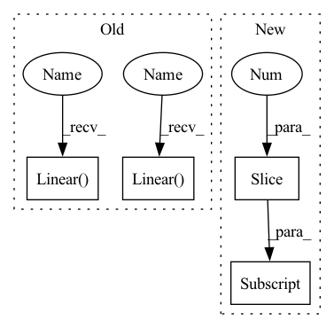

Pattern ID :21152
Before Change
*self.model.features[1:]
)
self.model.classifier = nn.Sequential(
nn.Linear( 4608, 4096, bias=True) ,
nn.ReLU(inplace=True),
nn.Dropout(),
nn.Linear( 4096, 4096, bias=True) ,
nn.ReLU(inplace=True),
nn.Dropout(),
nn.Linear(4096, self.config.num_classes, bias=True),After Change
// remove final layers if we only need to extract features
if self.config.extract_feature_only:
self.model.classifier = self.model.classifier[:-3]
def forward(self, x):
return self.model.forward(x)
In pattern: SUPERPATTERN
Frequency: 3
Non-data size: 4
Instances Fragment ID: 67810946
Project Name: biasvariancelabs/aitlas
Commit Name: 3c4c781681550868173efe6230071ba63a1b65d2
Time: 2020-12-30
Author: ivan.kitanovski@gmail.com
File Name: aitlas/models/vgg16.py
M Class Name: VGG16MultiLabel
N Class Name: VGG16MultiLabel
M Method Name: __init__(2)
N Method Name: __init__(2)
M Parent Class: BaseMultilabelClassifier
N Parent Class: BaseMultilabelClassifier
M File Name: aitlas/models/vgg16.py
N File Name: aitlas/models/vgg16.py
M Start Line: 26
M End Line: 47
N Start Line: 25
N End Line: 40
Before Change
def construct_critic_layers(self):
mlp_modules = []
mlp_modules.append(nn.BatchNorm1d(3))
mlp_modules.append(nn.Linear( 3, self.critic_layers_1) )
mlp_modules.append(nn.ReLU())
mlp_modules.append(nn.Linear(self.critic_layers_1, self.critic_layers_2))
mlp_modules.append(nn.ReLU())
mlp_modules.append(nn.Linear( self.critic_layers_2, self.critic_layers_3) )
mlp_modules.append(nn.ReLU())
mlp_modules.append(nn.Linear(self.critic_layers_3, 1))
mlp_modules.append(nn.Sigmoid())After Change
def construct_critic_layers(self, layer_dims):
mlp_modules = []
mlp_modules.append(nn.BatchNorm1d(3))
for i, (d_in, d_out) in enumerate(zip(layer_dims[:-1], layer_dims[1:] )):
mlp_modules.append(nn.Linear(d_in, d_out))
if i != len(layer_dims[:-1]) - 1:
mlp_modules.append(nn.ReLU()) Fragment ID: 67810906
Project Name: rucaibox/recbole
Commit Name: df4a0e1f23d7d6597635af15d4665c02fabbd232
Time: 2021-03-02
Author: chenghaoran29@foxmail.com
File Name: recbole/model/general_recommender/ract.py
M Class Name: RaCT
N Class Name: RaCT
M Method Name: construct_critic_layers(2)
N Method Name: construct_critic_layers(1)
M Parent Class: GeneralRecommender
N Parent Class: GeneralRecommender
M File Name: recbole/model/general_recommender/ract.py
N File Name: recbole/model/general_recommender/ract.py
M Start Line: 174
M End Line: 183
N Start Line: 172
N End Line: 181
Before Change
def __init__(self, n_in, n_out, n_h):
super().__init__()
self.net = nn.Sequential(
nn.Linear( n_in, n_h) ,
nn.LeakyReLU(0.2),
nn.Linear( n_h, n_h) ,
nn.LeakyReLU(0.2),
nn.Linear(n_h, n_h),
nn.LeakyReLU(0.2),After Change
def __init__(self, *layer_sizes, leaky_a=0.2):
layers = []
for s1, s2 in zip(layer_sizes, layer_sizes[1:] ):
layers.append(nn.Linear(s1, s2))
layers.append(nn.LeakyReLU(leaky_a))
super().__init__(*layers[:-1]) // drop last ReLU Fragment ID: 67810947
Project Name: janosh/torch-mnf
Commit Name: 0664a2ea516f30dda5d538a8a683b08e62e71948
Time: 2020-11-11
Author: janosh.riebesell@gmail.com
File Name: torch_mnf/models/mlp.py
M Class Name: MLP
N Class Name: MLP
M Method Name: __init__(1)
N Method Name: __init__(4)
M Parent Class: nn.Sequential
N Parent Class: nn.Module
M File Name: torch_mnf/models/mlp.py
N File Name: torch_mnf/models/mlp.py
M Start Line: 7
M End Line: 17
N Start Line: 8
N End Line: 12
Before Change
*self.model.features[1:]
)
self.model.classifier = nn.Sequential(
nn.Linear( 4608, 4096, bias=True) ,
nn.ReLU(inplace=True),
nn.Dropout(),
nn.Linear( 4096, 4096, bias=True) ,
nn.ReLU(inplace=True),
nn.Dropout(),
nn.Linear(4096, self.config.num_classes, bias=True),After Change
if self.config.pretrained:
self.model = models.vgg16(self.config.pretrained, False)
self.model.classifier = self.model.classifier[:-1] // remove final layer
self.model.classifier.add_module(
"6", nn.Linear(4096, self.config.num_classes, bias=True)
) Fragment ID: 67810929
Project Name: biasvariancelabs/aitlas
Commit Name: 3c4c781681550868173efe6230071ba63a1b65d2
Time: 2020-12-30
Author: ivan.kitanovski@gmail.com
File Name: aitlas/models/vgg16.py
M Class Name: VGG16MultiLabel
N Class Name: VGG16MultiLabel
M Method Name: __init__(2)
N Method Name: __init__(2)
M Parent Class: BaseMultilabelClassifier
N Parent Class: BaseMultilabelClassifier
M File Name: aitlas/models/vgg16.py
N File Name: aitlas/models/vgg16.py
M Start Line: 26
M End Line: 47
N Start Line: 25
N End Line: 40